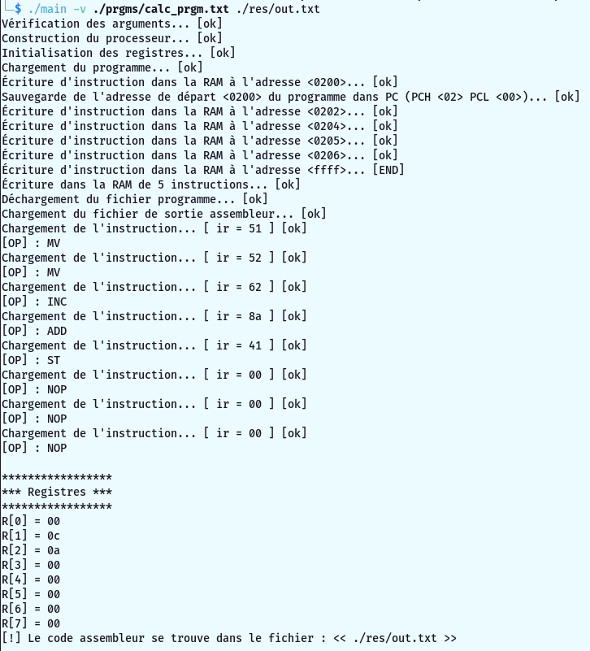
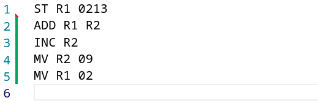
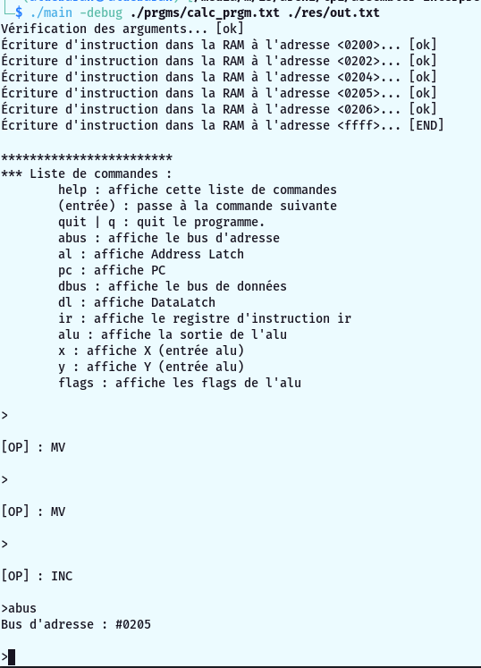

TP Archi rendu 1
Le but de ce tp est de simuler un processeur.
Le programme prend un fichier contenant les instructions au format "adresse : instruction_hex", il lit ce fichier et décode chacune des instructions pour l'éxécuter. Les instructions décodées sont ensuite sauvegarder dans un fichier.
format : HHLL: AA BB CC
Pour des raisons de lisibilité les addresses sont données sous forme HHLL et non LLHH !
L'éxécution du programme engendrera sur le fichier de sortie : le code assembleur.
La structure du processeur est déclarée dans le fichier proc.h, elle est définie dans le fichier proc.c.
Elle correspond au schéma dans le sujet de tp, c'est-à dire que les registres, bus, ram, alu, etc... sont représentés par des octets (type -> byte*).
Les signaux sont représentés par des fonctions tout comme les micro-instructions de l'ALU.
Les opérations ASSEMBLEUR sont déclarées dans le fichier operations.h et sont définies dans le fichier operations.c.
Chaque opérations est représentée par une structure et possède une fonction qui lui est propre, son appelle correpond à son exécution.
Le décodage est effectué dans operations.c. Il permet de savoir qu'elle opération doit être appeler selon le code d'instruciton donné (c'est le registre IR du processeur).
Le parser permet de charger le programme donné dans la ram du processeur.
Fonctions permettant d'arrêter le code à chaque instructions et d'éxécuter une liste de commandes. Le but étant d'éxécuter pas à pas le programme tout en ayant accés aux différentes valeurs du processeurs (registres, alu, bus, etc...).
Contient l'entré du programme, tout est géré ici.
Compilation :
- $ make
Lancement du programme :
- $ ./main [-debug] [-v] <fichier_prgm> <fichier_sortie_assm>
exemple : ./main -v ./my_prgm.txt ./res/out.txt
Options :
-debug : Permet de décoder pas à pas le programme et d'afficher les variables du processeur.
-v (verbose) : Affiche plus d'informations dans la console.
Appuyer sur entrer pour éxécuter l'opération suivante.
Le programme se termine automatiquement lorsqu'il lit 3 opérations NOP.
Vous retrouvez le code assembleur du programme dans ./res/out.txt
Exécution simple

Fichier de sortie assembleur

On lance la commande en spécifiant l'option -debug.
La liste de toutes les commandes du débuggeur s'affiche, ainsi qu'une invite de commande.
Appuyer simplement sur la touche "entrée" pour éxécuter la commande suivante.
Utiliser les commandes indiquer pour afficher des valeurs du processeur.
Vous pouver stopper l'éxécution du programme avec la commande "quit" ou "q"
Note : pas de mode "points d'arrêt" comme indiqué dans le sujet TP1.pdf car on estime qu'arrêter l'éxécution du code à chaque instructions dispense l'utiilisation de cette fonctionnalité.
Exécution en mode débogage

Dans le dossier ./prgms/ !
# my_prgm.txt : Ce premier programme est celui du sujet.
# calc_prgm.txt :